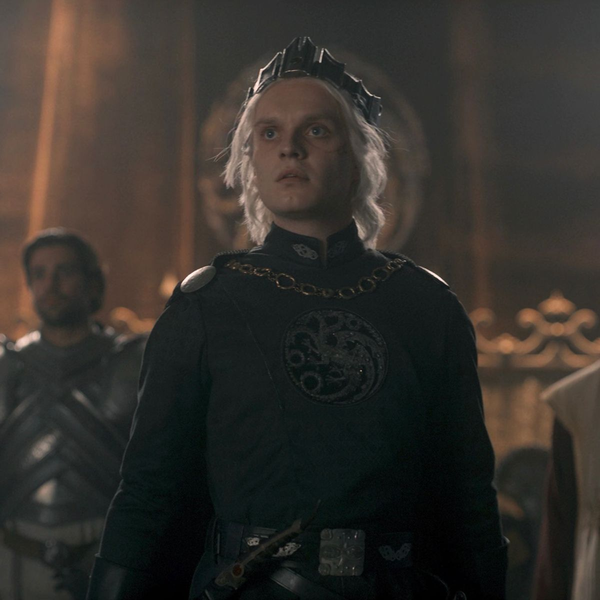
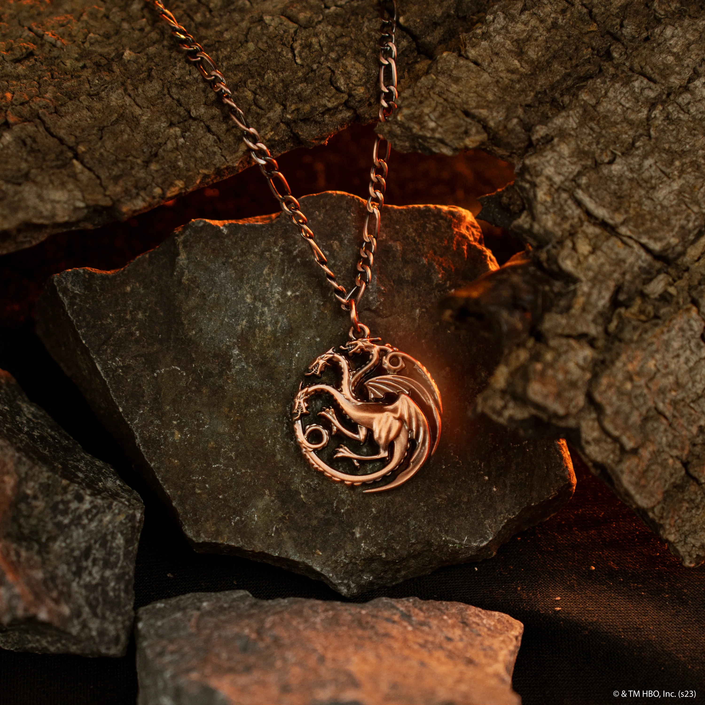
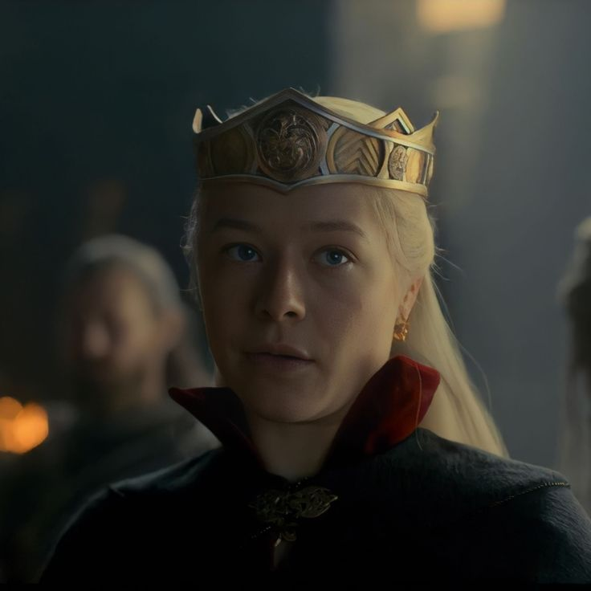

Ils sont tous fous. la danse des dragons fut une querre civil targaryen, entre la
"team blakc"
et la
"team green"
, pour la succession au trône de fer, et elle a vu des dragons combattre entre eux - ce qui en a tué la majorité.



Préque tous les motifs de la série sont tirés des livres de George R.R Martin.
LES LIVRESMais Martin refuse d'accepter le série, parce que les réalisateurs n'ont pas agi selon le canon, et ont changé beaucoup de choses
Le conflit ce passe entre RHAENYRA et AEGON targaryens
RHAENYRA AEGONViserys I, le cinquième roi de la Dynastie des Targaryen, n'avait jamais eu d'héritier mâle. Sa première femme Aemma Arryn ne lui avait donné qu'un enfant, sa fille Rhaenyra Targaryen, que le roi nomma comme héritière du Trône de Fert. Puis il c'est ramarier avec une autre femme.
La nuit où Viserys I mourut, sa femme Alicent convoqua le Conseil restreint pour l'informer de la mort du roi. Ser Otto Hightower, la Main du Roi et père de la reine Alicent, exigea que la question de la succession soit réglée au plus vite. Comme les Sept Couronnes n'avaient jamais eu de reine avant, beaucoup ont été troublés par la pensée de Rhaenyra qui succéderait au Trône.
Mais Viserys a laiser le trône a Reynira, donc son marie Daemond a desider avec elle de se batre pour le trône, Raenyra avait besucoup d'aide de la paet des Velaryon.